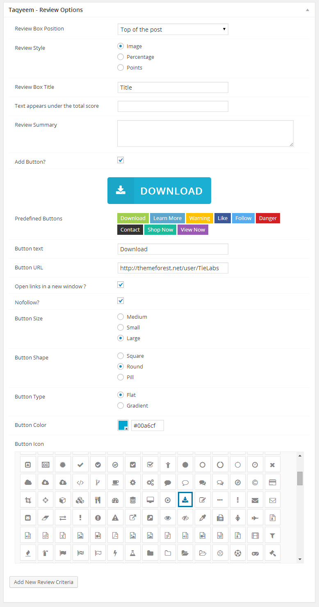

Taqyeem - Buttons Addon
By TieLabs
Thank you for purchasing my plugin . Please read this document and explore the item comments and FAQ items for further information and help.
For questions on basic WordPress installation/usage, HTML, JavaScript or CSS editing - please try the ThemeForest forums, W3Schools, the Wordpress Codex or Google as plugin errors/issues get top priority.
Don't Forget If You Like It, Rate It !
Installing The Plugin
Uploading The Plugin via FTP to Wordpress
You can also install The Plugin via FTP
- Decompress the .zip file you downloaded from CodeCanyon.
- Find the taqyeem-buttons folder (this directory is created when you unzip the file).
- Upload the taqyeem-buttons folder to your wp-content/plugins directory.
- Navigate to your Control Panel: Plugins
- Under Taqyeem Buttons Addon, click Activate
Installing The Plugin from the WordPress Dashboard
You can install The Plugin via the WordPress plugin uploader without unzipping the file.
- Log into your WordPress admin panel
- Navigate to Plugins > Add New
- Click Upload
- Click Choose File and select the taqyeem-buttons download zip.
- Click Install Now.
Add a Button

- Check this for how to add a review post.
- In the Taqyeem - Review Options box .. Check the Add Button checkbox to display the button options.
- Enter the Text and the URL for the Button .
- Customize your button as you want ... choose the size, shape, type, color and icon
- Or Use on of the ready to use predefined buttons .